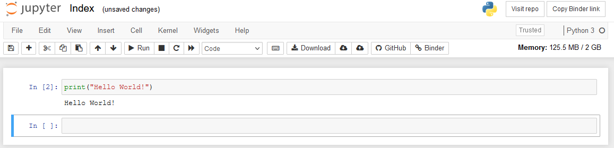
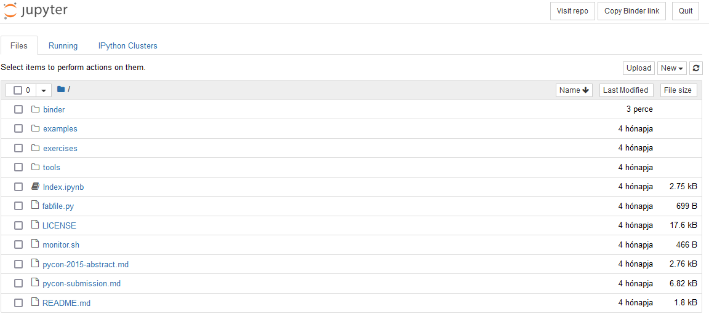

Jupyter
Számos fejlesztőkörnyezet és -eszköz érhető el a Python nyelven történő programozáshoz. Az egyik legelterjedtebb Python környezet a Jupyter Notebook. Az online változatának előnyei közé tartozik, hogy regisztráció nélkül is enged fájlokat kezelni. A kurzus során használható az online és a desktop változat is, de érdemes a desktop változatot telepíteni, mert a szerverek terheltségétől függően az online változat néha csak sokadik próbálkozásra indul el.
A Jupyter .ipynb kiterjesztésű állományokkal dolgozik, és különlegessége, hogy ezekben egymás mellett képes formázott szöveges elemeket (Markdown) és futtatható Python kódrészleteket kezelni. Mi alapvetően csak kódok futtatására fogjuk használni, de a jellegéből adódóan kiválóan alkalmas jegyzetelésre is.
Telepítés
A Jupyter Notebook többféle módon telepíthető. A hasonló JupyterLab több funkcióval bír, és kicsit eltérően néz ki, de a tantárgy szempontjából nincs jelentős különbség. Bármelyik megfelel.
Első körben mindenképp szükség van a Python környezet telepítésére. A python.org oldalról letölthető az operációs rendszerünknek megfelelő változat. Érdemes a legújabb stabil telepítőkészletet választani (nehogy valaki a 'soruce code'-al próbáljon meg szenvedni).
A jupyter.org oldalon található útmutató a különböző telepítési módokhoz. Ha valaki a csomagok kezeléséhez Anaconda-t is telepített, akkor nem érdemes leírást követni, mert a legújabb változatok alapértelmezésben automatikusan telepítik a Jupyter Notebook-ot.
Első telepítéskor talán a pip installálás a legegyszerűbb. Az alábbi parancsot kell kiadni a konzolban (Windows - Command Prompt, MacOS - Terminal).
pip install notebook
Ha a telepítés sikeres, akkor pedig ugyanonnan ezzel a paranccsal indítható a Jupyter Notebook:
jupyter notebook
Induláskor a konzolban elindul a kapcsolódó szerver, és az alapértelmezett böngészőben megnyílik a Jupyter Notebook. A konzol ablakot alap beállítások mellett nem lehet munka közben bezárni, mert leállnak a kód futtatásához szükséges funkciók.
Ha valaki írásvédett mappába (tipikusan Program Files) telepítette a Pythont, vagy már volt korábbi verziója, akkor könnyen előfordulhat, hogy a PATH környezeti változó nem jól lesz beállítva, és ezért nem működik az indító parancs. Ilyenkor alternatívaként érdemes a Python-on keresztüli hívással is próbálkozni. Ez általában megoldja a problémát.
python -m notebook
Ilyenkor a böngészős kliens nem indul el magától, de a konzolon megjelenő linkkel elérhető.
Használat
A Jupyter Notebook az elindítását követően a böngészőben indul el. Az offline változatban először létre kell hoznunk egy üres .ipynb fájlt valahol a gépen. Az online változatban egy előre elkészített fájl nyílik meg mely négy Markdown nyelven írodott szöveges elemből, úgynevezett cellákból áll. Ezek a jobb felső sarokban levő gombokkal tetszőlegesen módosíthatók. Ilyen cellákat kezelve fogunk dolgozni.
A középső legördülő menüben a Markdown feliratot Code-ra váltva a cella Python kód futtatására alkalmassá változik. Első indításkor érdemes kivágni a felesleges szöveges elemeket és egy új, üres kód cellával indulni. Egy "Hello World!" szöveget megjelenítő példakód megvalósítása így néz ki:

A példában megírtuk a kódunkat és a Run gombra kattintva futtattuk. Ekkor az alatta levő sortól kezdődően megjelent a program kimenete, valamint nyílt egy új cella, ahová a következő kódrészletünket írhatjuk.
Fájlkezelés
A ikonra kattintva megnyitható a fájlkezelő. Offline változatban ez alapértelmezetten a felhasználónk gyökérkönyvtárára mutat.
Az online változatban itt számos segédanyag és technikai fájl is található. A saját fájljaink pedig az ideiglenes binder mappában vannak.

Számunkra csak az .ipynb kiterjesztésű fájlok érdekesek, ezekben tárolhatók futtatható kódrészletek. Alapértelmezésben csak egy Index.ipynb fájl található itt. Ez az a fájl, amibe eredetileg dolgoztunk. A jobb oldali New gombbal létrehozhatunk újabb fájlokat, de fel is tölthetünk sajátokat az Upload gomb segítségével. Desktop változatban egyszerűen a mappába is másolhatjuk a megfelelő kiterjesztésű szövegfájlt. A kurzus példa feladatainak megoldásait .ipynb kiterjesztésű állományokban töltöttük fel a Moodle rendszerbe. Ezeket például érdemes lesz ilyen módon betölteni.
Amennyiben valaki regisztrált az oldalra, vagy a desktop változatot használja, akkor a fájljai bármikor elérhetők. Regisztráció nélküli felhasználás esetén azonban a binder csak ideiglenes, és a tartalma kilépés után elveszik. Szerencsére a megnyitást követően a Download gomb megnyomásával letölthetők az egyes fájlok, így regisztráció nélkül sem veszik el a munkánk.